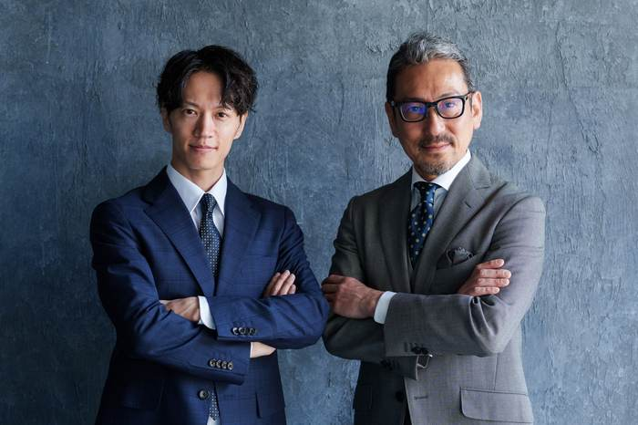

01
Step 01
自分を活かす
感情を知り、認識や価値観に気づき、自分で判断・選択できる力を育てる。自己理解が出発点です。
株式会社Brifu — EQ Platform Ver2.0
認識を整え、感情を力に変え、豊かな人生と社会を創る。
EQを学び、実践し、人間力を育てる教育プラットフォーム
Why — なぜ、EQ Platformをつくったのか
いま、起きていること
株式会社Brifuの捉え方
Brifuが大切にしてきたのは、人の成長を知識やスキルだけで捉えないこと。
人には感情があり、その奥に認識・価値観・判断基準があり、そこから選択や行動が生まれます。だからこそBrifuでは、
までを、一つの成長として考えています。そのためにつくられたのが、EQ Platformです。
EQ Recognition Theory — EQ認識理論
同じ出来事でも感じ方や行動が違うのは、認識が違うから。EQ Platformは、この「EQ認識理論」が土台です。
出来事は変えられなくても、受け取り方（認識）に目を向ければ、感情と行動は変えていけます。相手や環境より先に、自分の内側から始められます。
変化の第一歩は、「気づくこと」。感情が動いた瞬間に「私は今、どんな認識をしているのだろう？」と問うことで、同じ悩みの繰り返しから抜け出せます。
学び、実践し、振り返るほど、認識の質は高まります。感情を適切に活かし、自分と他者を尊重した選択ができるようになります。
項目にカーソルを合わせる（スマホはタップする）と、補足が現れます。
EQ Platform — 人の成長を、学びだけで終わらせない
EQ Platformは、一つの講座の名前ではありません。EQを通して心の土台・能力・人間力を育て、その力を人材育成・ビジネス・組織・社会へつなぐ、教育・実践Platformです。BrifuはEQを、「自分と人との信頼ある人間関係をつくる力」と捉えています。
Step 01
感情を知り、認識や価値観に気づき、自分で判断・選択できる力を育てる。自己理解が出発点です。
Step 02
相手の感情・価値観を理解し、一人ひとりの成長を支援できる力を身につける。
Step 03
EQを仕事・組織・社会課題の解決へつなげ、より良い未来をともにつくる。
目指すのは、EQを「知っている人」ではなく、日常で実践し、自分と人を活かせる人を育てることです。
What is EQ — EQとは
生まれつきの才能ではなく、順番をたどれば誰でも育てられる力です。
まず、自分が何を感じているのかに気づく。
その感情に、名前をつけて扱えるようにする。
自分が分かるから、相手の心にも目を向けられる。
認識の違いに気づき、互いに確認しながら対話する。
感情に流されず、目的から選べるようになる。
選んだことを実行し、結果からまた学ぶ。
Two Directions — 人の成長には、2つの方向がある
Horizontal Growth
できることを増やす
知識・技術・対人スキルなど、「何ができるか」を増やす成長。EQスキルが中心に担います。
Vertical Growth
人としての土台・あり方を育てる
何を感じ、なぜそう捉え、何を大切にしているのか。自分軸・あり方・人間力を育てる成長です。
横成長を中心に。日常で使えるEQスキルを、実践的に鍛える。
縦成長の土台。感情を入口に自分を理解し、心の土台をつくる。
さらに深める。あり方・価値観・判断力を、実践の中で育てる。
心の土台 × EQスキル × 人間力 × 実践4つが統合されて、はじめて本当の成長が生まれます。
EQ Platform Ver2.0 — 教育プラットフォーム
入口のEQ Gateから、5つのステージを段階的に進んでいきます。
学ぶ → 気づく → 育つ → 実践する → 社会へ活かす。
そして必要な時には、また自分自身の学びへ戻る。
一方向の教育プログラムではなく、成長が循環し続ける仕組み。どこから入っても、どこへでもつながっています。
Stage 01入口・はじめの一歩
EQとの出会いの入口
EQに触れ、自分を知るきっかけをつくる場所。情報・診断・体験・コンテンツがそろっています。
Gateメンバー（無料）
Stage 02心の土台を育てる縦成長の土台
認識更新ステージ
感情を入口に自分を理解し、認識・価値観・判断基準に気づきながら、自分軸と人間力の土台をつくります。
主な学び：EIA Gate ／ EQリカバリー ／ EIA STEPⅠ〜Ⅳ 等
EIA を詳しく見るStage 03EQを使う力を育てる横成長
スキル習得ステージ
感情・行動・コミュニケーションなど、人生・仕事・人間関係で使えるスキルを、実践的に育てます。
Stage 04あり方・人間力を育てる縦成長
人間力向上ステージ
あり方・価値観・判断力を実践の中で育て、人格・人間力を高めていきます。
Stage 05学んだEQを実践する
実践・習慣化ステージ
学んだEQを日常で実践し、仲間とともに成長する場です。
Consulting個別コンサルティングプラットフォーム
EQ認識理論 活用ステージ
学んだEQを、社会の中で価値に変える。個人・経営者・企業・組織の課題解決を、伴走して支援します。
個人｜EQを活かしたビジネスをつくりたい
法人・組織｜会社・組織へEQを活かしたい
個人向け伴走の3ステップ
誰に、どんな価値を届けたいのか。
ターゲット・提供価値・価格を設計する。
発信・募集・顧客導線を整える。
企業・組織には、課題に合わせてEQによる人材育成・組織づくりを支援し、組織全体の信頼と自律性を高めます。EQを学ぶだけでなく、自分の仕事として社会へ届けるところまで伴走します。
For You — 立場ごとに、得られるもの
講師・コーチ・コンサルタント
伝える力だけでなく、相手の感情・価値観・認識に合わせて関わる力を身につける。一人ひとりに合ったアプローチで、本質的な変化を引き出せるようになります。

経営者・リーダー
メンバーの感情・価値観・認識を理解し、その人らしい成長を支援するリーダーシップを育てる。指示ではなく、可能性を引き出す関わりへ変わります。
人材育成担当者・教育者
研修や教育プログラムにEQの視点を取り入れ、「聞いて終わり」にならない学びの場を設計する力を身につけます。
The Cycle — 学びの循環
学びを日常に活かし、より良い未来を創る循環。
Brifu
自覚と実践の繰り返しで、認識が更新され、行動と未来が変わる。
EQと認識理論で、新しい視点を得る
学びを意識して行動し、体験を積む
結果とその時の感情を整理する
感情の奥の認識や思い込みに気づく
より良い選択で、新たな一歩へ
自分の成長が、
誰かの成長を
支える力になる。
このサイクルを繰り返すことで、認識が深まり、感情が整い、行動の質が高まります。その積み重ねが、自分らしい人生と、より良い人間関係・仕事・社会を創ります。
Start Here
EQ Platformには、一人ひとりに違う入口があります。
自分を理解し、感情や行動を整え、自分軸を育てたい。
→ EIA ／ EQ Skills B講師・コーチ・育成者として、人の成長を支援したい。
→ EQコアカード® ／ 育成者ルート C起業・副業に、自分の専門性とEQを掛け合わせたい。
→ EQ Business Nexus｜個人向け伴走 D人材とリーダーを育て、組織の風土を変えたい。
→ EQ Business Nexus｜企業・組織支援 E現在地に合わせた入口をご案内します。
→ まずは相談自分を活かす。
人を活かす。
その力を、社会へ活かす。
入口は一人ひとり違っても、その先はつながっています。「どこから始めればよいか知りたい」と、お気軽にお伝えください。